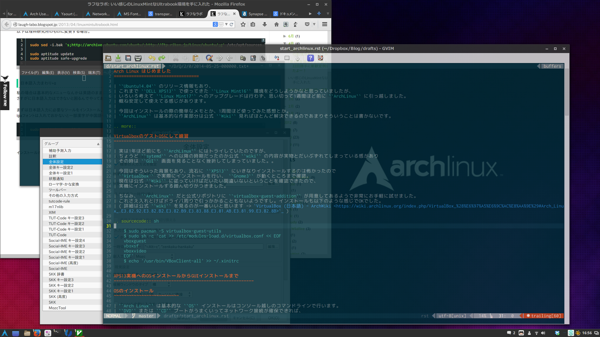

Arch Linux はじめました
VirtualboxのゲストOSにして練習
$ sudo pacman -S virtualbox-guest-utils
$ sudo sh -c 'cat >> /etc/modules-load.d/virtualbox.conf << EOF
vboxguest
vboxsf
vboxvideo
EOF'
$ echo '/usr/bin/VBoxClient-all' >> ~/.xinitrc
XPS13実機へのOSインストールからGUIインストールまで
OSのインストール
GUIインストール
GUIインストール後の基本的なところ
GUI ログインができるようになったら、あとは基本的な環境構築をやってく感じで この辺から他のディストリビューションとの難易度的な差がなくなってきます。 むしろ公式 Wiki が充実しているのでかえって楽にさえ感じてくるかもしれないです。 だいたいやったことを上げてみると
Cinnamon の設定からいじれるように NetworkManager をインストール&有効化
- Openvpn の追加
GUIから設定できるように networkmanager-openvpn を入れる。詳細はこちら NetworkManager (日本語) - ArchWiki
- AUR を利用するため yaourt をインストール。
- 半透明に設定したいツールの対応。
- Gnome-Terminal が最新だと Transparent オプションがなくなってしまっていたので devilspie を導入。 ~/.devilspie/opacity.ds とかを作って以下のように記載。あとは ~/.xprofile なり Cinnamon の自動起動するアプリケーションなりにログイン時に devilspie を起動するようにしておけばOK。(ついでに Gvim も一緒に対応)
(if (matches (window_class) "Gnome-terminal") (opacity 90) ) (if (matches (window_class) "Gvim") (opacity 85) )
日本語入力をするため mozc-ut をインストール
- 日本語対応フォントをインストール
- UI 周り
Takaoフォント, IPAフォント, MSフォント とか
- 作業環境
Ricty, Dejavu Sans, aur/powerline-fonts-git とか( powerline-font があるのが地味に嬉しい )
- 絵文字関連
ttf-symbol, ttf-freefont とか (これでも一部化ける。。)
- キーバインド変更
右Altで入力言語の切り替えをしたかったので ~/.Xmodmap を編集して Alt_R を Zenkaku_Hankaku にバインド。 ~/.xprofile なりに xmodmap $HOME/.Xmodmap を追記するのを忘れずに。
- ビットマップフォントのアンチエイリアスを有効化
- 個人的にビットマップフォントまんまは見づらい。。ここは公式の情報を漁ってみるもいいものに出会えず。普段使いのArch Linux: Arch Linuxで日本語フォントを設定 | 日本語フォントのインストール&見やすく表示する設定 を参考にさせてもらったところうまく行った。以下の内容の ~/.config/fontconfig/fonts.conf を追加する感じで。
<?xml version="1.0"?> <fontconfig> <match target="font"> <edit mode="assign" name="embeddedbitmap"> <bool>false</bool> </edit> <edit mode="assign" name="hintstyle"> <const>hintnone</const> </edit> </match> </fontconfig>
- VMware Player のインストール
- 公式 から64bitバイナリ を取得して、インストール。注意点があるので、そこは VMware - ArchWiki を参照しながらやればOKただし、現状ゲストの Windows8.1 を一回起動すると Super キーがホールドされてるようなおかしな状態になってしまう。。 (解決法調査中)
- VirtualBox のインストール
pacman の community レポジトリにあったのでコマンド一発でOK。
- その他普段使いのツールたち
- Gvim
メインで使ってるエディタ
- Atom
Github 的なあれ。 AUR に atom-editor という名前ですでに登録済みでびっくり。
- Dropbox
Cinnamon レポジトリにもあるけど、そちらはインストールがコケるので通常レポジトリのものでOK
- firefox
Web ブラウザ
- Chromium
Web ブラウザ
- Google Chrome
Web ブラウザ、 AUR を使うと最新の deb からインストールしてくれる
- KeepassX2
マルチプラットフォームなパスワード管理ツール。 AUR にある2系対応 KeepassX 。 アルファ版らしいが十分実用レベルで問題なし
- Synapse
Linux 版の Alfred 的なランチャー。多分こいつが現状開発が活発っぽい
- Zeal
Linux 版の Dash 的なドキュメントブラウザー
- Growl for Linux
weechat の通知を受けたいので必須。 AUR にある
- Remina
Windows サーバにリモデする際に必要
- gnome-screenshot
スクリーンショットツール Cinnamon 単体だと入ってないので必須
- evince
PDF ビュワー
- gThumb
jpg 、 png などの画像ファイルビュワー
- GIMP
定番画像加工ツール。
- Inkscape
定番お絵かきツール。
- LibreOffice
定番フリーのオフィスツール。 VM の Windows を使うまでもないときはやっぱ必要
- Rhythmbox
ローカルの音楽ファイル再生用
- p7zip
7zip 扱うときに
こんなところでしょうか。

{kind=link}